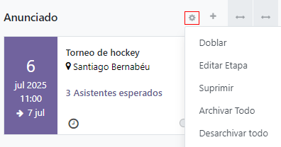
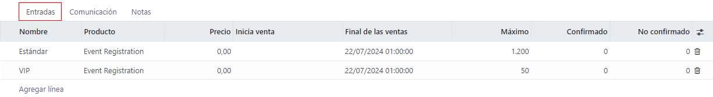
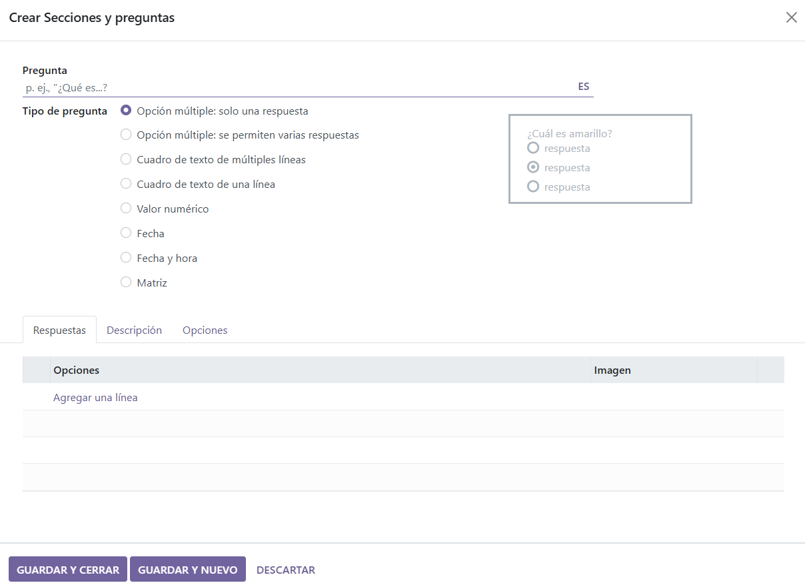
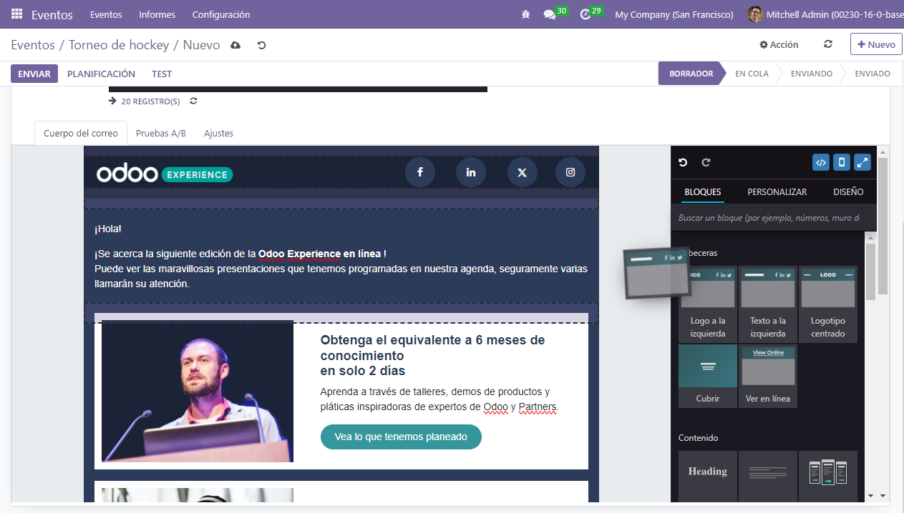

Información fundamental sobre Eventos¶
La aplicación Eventos de Odoo proporciona a los coordinadores de eventos una variedad de herramientas de planificación, comunicación y generación de informes para crear experiencias inmersivas y atractivas para los clientes. El personal puede crear y publicar eventos en su sitio web, vender entradas en línea, enviar correos electrónicos automatizados y generar datos de informes valiosos una vez que inicie el registro al evento.
Conceptos y organización en kanban¶
Para comenzar, haga clic en la aplicación Eventos en el tablero principal, aparecerá la vista kanban con varias etapas del flujo. La información clave aparece en cada tarjeta del evento, como la fecha y la hora del evento, junto con el número de asistentes esperados (y confirmados).
Para crear una nueva etapa, haga clic en Agregar una columna y escriba un título que describa el propósito de esa etapa.
Para reorganizar las etapas, solo arrástrelas y suéltelas hasta que estén en el orden correcto. También puede «plegar» las etapas en kanban para un aspecto más despejado, a través del menú Ajustes que se encuentra a la derecha del título de cada etapa, representado por un icono de engranaje.
Nota
El icono del engranaje está oculto de forma predeterminada, aparecerá junto al icono + cuando pase el cursor por encima.
Al hacer clic, aparecerá un menú desplegable de ajustes.
Crear un nuevo evento¶
Para crear un evento, haga clic en Nuevo desde el tablero de Eventos. Odoo dirigirá la página a un formulario de plantilla de evento en blanco.
Complete los campos necesarios del formulario de evento, puede elegir entre los datos existentes en la base de datos de Odoo o crear y editar nuevos datos de campo. La información más relevante para crear el evento incluye:
Nombre del evento: escriba el nombre de su evento.
Fecha: incluye las fechas y el horario de inicio y fin del evento.
Zona horaria: indica la zona horaria en la que tiene lugar el evento.
Plantilla: seleccione una plantilla de evento predefinida o cree una personalizada para utilizarla aquí.
Etiquetas: añada etiquetas que sirvan para identificar de qué tipo de evento se trata (por ejemplo,
feria de negocios). Estas etiquetas ayudan con la organización de los eventos en la vista de kanban y son muy útiles al elaborar informes.Organizador: información sobre los organizadores del evento. Normalmente se completa este campo con el nombre de la empresa dueña de la base de datos de Odoo, o un proveedor.
Responsable: nombre de la persona encargada de la organización del evento.
Sitio web: indica el sitio web de Odoo en el que se mostrará el evento.
Sede: use este espacio para escribir los detalles sobre la sede si se trata de un nuevo registro, en caso contrario, elija una ubicación existente.
Límite de registros: cuando está activada, esta opción limita los registros de asistentes a una cantidad determinada.
:guilabel:` Autoconfirmación`: si está activada, se omite el envío del mensaje de confirmación por correo electrónico a los participantes en el evento, de esta manera se confirma su registro de forma automática.
Una vez que se hayan configurado los campos del formulario del evento, vaya a las pestañas Entradas y Comunicación, y si tiene más información, también a la pestaña Preguntas.
Agregar y vender entradas para eventos¶
En la pestaña Entradas, podrá añadir líneas para indicar cada tipo de entrada que vaya a ofrecer. También podrá definir el precio, las fechas de inicio y fin y el número máximo de entradas a la venta.
Si no habilita la venta de entradas, se mostrará un botón de registro de forma predeterminada en la página del evento.
Envío de correos electrónicos, mensajes y publicación en redes sociales de forma automática sobre los eventos.¶
En la pestaña de Comunicación puede configurar los correos electrónicos, mensajes de texto y publicación de mensajes en redes sociales para seguir en comunicación con los asistentes de su evento. Si desea agregar métodos de comunicación, vaya a la pestaña Comunicación y haga clic en guilabel:Agregar una línea, lo siguiente es escoger o crear una plantilla de comunicación mediante el menú desplegable en la columna Plantilla.
Ahora debe definir el Intervalo y la Unidad de tiempo para definir cada cuánto se debe enviar la comunicación; use los campos de tiempo para especificar si se debe enviar en horas, días, semanas, o meses. Igualmente, existe la opción para enviar estas comunicaciones de manera inmediata con ayuda de algún activador específico.
La última columna sirve para determinar el activador que controlará cómo y cuándo se enviará la comunicación. Sus opciones son antes del evento, después de cada registro, o después del evento.

Adjuntar cuestionario a los registros del evento¶
Enviar cuestionarios durante los registros es una gran manera de evaluar las necesidades e intereses de los asistentes antes del evento. También sirve como herramienta de análisis informativa para reportar antes o después de los eventos.
Si desea crear un cuestionario desde la aplicación Eventos, vaya a y habilite la función Preguntas.
Con esta función activada podrá añadir (y registrar) preguntas y respuestas en la pestaña Preguntas del formulario del evento. Especifique en cada pregunta si solo se debe hacer una vez mediante la casilla Preguntar una vez por orden, o si la pregunta requiere una Respuesta obligatoria, esto hará que la pregunta sea obligatoria para el registro.
Example
Si habilitó la opción Una vez por orden, entonces se enviará un solo cuestionario aunque se registren 3 asistentes en un registro.
Existen dos tipos de preguntas a escoger: Selección y Entrada de texto. Selección permite que los asistentes seleccionen una respuesta de varias opciones previamente configuradas, las cuales debe definir en la pestaña Respuestas. Por otro lado, Entrada de texto permite que los asistentes escriban su propia respuesta en una caja de texto.
Registre notas internas o añada instrucciones para las entradas¶
Vaya a la pestaña Notas, ahí encontrará las opciones para agregar notas o instrucciones para entradas.
También podrá dejar notas internas (por ejemplo, listas de cosas por hacer, información de contacto, etc.) para el staff del evento o solo de referencia. En el campo Instrucciones de la entrada, puede compartir información útil con los asistentes (por ejemplo, dirección del evento, horario, etc.).
Truco
Escriba / en el campo de texto (Nota o Instrucciones de la entrada) para mostrar un submenú de opciones de estructura. Estas opciones ofrecen una variedad de formatos a elegir para así garantizar que la información interna esté organizada y sea fácil de revisar.
Invitar asistentes al evento¶
Si desea invitar gente a un evento, haga clic en el botón Invitar ubicado en la esquina superior izquierda del formulario del evento.
Dentro del formulario de invitación existe la opción de enviar por correo electrónico o mensaje de texto. Puede personalizar cada mensaje y agregar destinatarios.
Es obligatorio escribir una línea de Asunto pero el campo Vista previa del texto es opcional. La Vista previa del texto consiste en una frase atractiva para animar a los destinatarios a abrir el mensaje.
Nota
En la mayoría de casos, la vista previa del texto se muestra a lado del asunto. Mantenga este campo vacío para asegurarse de que aparezcan, en su lugar, los primeros caracteres del contenido del correo electrónico.
Seleccione invitados y configure filtros de destinatarios¶
En la parte media del formulario de invitación podrá ver el campo Destinatarios, si hace clic en él, se desplegará un menú con opciones de destinatarios. Odoo usará esta información para encontrar los datos de los destinatarios deseados.
Una vez que seleccione una opción de este menú (por ejemplo, Postulante, Contacto, Registro a un evento, Lead/Oportunidad, etc.), Odoo le enviará la invitación a todos los destinatarios que coincidan con esa regla inicial. Puede agregar reglas adicionales para delimitar a los destinatarios, solo debe hacer clic en Agregar filtro.

Si hace clic en Agregar filtro aparecerán tres campos en forma de ecuaciones. Para obtener más opciones en los submenús debe hacer clic en cada campo; elija la mejor para sus necesidades y termine con la configuración. En el lado derecho del campo Destinatarios se indicará el número de los Registros que cumplan con las reglas.
Nota
Algunas opciones de submenú en el primer campo de la regla permiten agregar una segunda opción para ser aun más específicos.
Cada regla va a tener los iconos x, +, y … a su lado derecho. El icono x elimina una línea específica de la regla, el icono + agrega una línea y el icono … agrega una rama. Una rama consiste en agregar a la regla dos líneas adicionales con sangría, lo que proporciona más claridad.
Personalice las invitaciones para eventos¶
En la pestaña Cuerpo del correo, hay una serie de plantillas de mensajes preconfiguradas a elegir. Seleccione la plantilla deseada y modifique cada elemento de diseño con la función de arrastrar y soltar del constructor de sitios web de Odoo, situado en la barra lateral derecha.
Truco
Si desea crear una invitación desde cero, seleccione la plantilla Texto sin formato, de esta manera obtendrá una plantilla en blanco que podrá personalizar desde el front-end con un editor de texto (se aceptan los comandos con “/”) o desde el editor de código XML, solo debe habilitar el modo de desarrollador y presionar el icono </>.
Nota
La pestaña Cuerpo del correo y las opciones de plantilla solo están disponibles si la invitación al evento Tipo de envío se designa como Correo electrónico. Si SMS es el Tipo de envío, la pestaña disponible será Contenido del SMS (que consiste en un espacio de texto en blanco).
Modificación de los ajustes de las invitaciones¶
Las opciones de la pestaña Ajustes son diferentes, según el Tipo de envío especificado.
Si se selecciona la opción Correo electrónico como tipo de envío puede asignar a un empleado como Responsable. Aquí también podrá denominar los alias de correo electrónico de Enviado desde y Responder a.
Además, si necesita enviar algún documento con la invitación puede adjuntarlo en el correo electrónico con el botón Adjuntar un archivo.
Si se selecciona la opción SMS como tipo de envío, puede designar un Responsable, y estará disponible la opción de Incluir enlace de exclusión.
Enviar invitaciones de eventos a destinatarios¶
Si se selecciona el tipo de envío como Correo electrónico, tendrá tres tipos de envío: Enviar, Programar y Probar.
La opción Enviar permite enviar la invitación inmediatamente. La opción Programar muestra una ventana emergente en la que se puede seleccionar una fecha/hora para el envío del correo electrónico. La opción Probar muestra una ventana emergente para el Envío de prueba, en la que se pueden introducir las direcciones de correo electrónico de destinatarios específicos para que Odoo les envíe la versión actual del correo para su revisión antes de su envío oficial a los posibles asistentes al evento.
Si se selecciona SMS como tipo de envío, habrá cuatro opciones de envío: Poner en la cola, Enviar ahora, Programar y Probar.
La opción Poner en la cola permite programar un mensaje de texto para todos los destinatarios (que coincidan con las reglas designadas, si las hay) en el futuro. Si hace clic en Poner en la cola, aparecerá una ventana emergente que le pedirá confirmación. Cuando se confirme, aparecerá un banner azul en el formulario de la plantilla de invitación al evento, indicando que el mensaje de texto se enviará más tarde ese mismo día.
Nota
Las opciones Enviar ahora, Programar, y Probar funcionan de la misma manera sin importar el tipo de envío.
Publicar eventos¶
Hasta que se publique un evento, permanecerá oculto para el público en el sitio web y no será posible registrarse. Para publicar un evento, acceda a él desde el backend de Odoo a través de la aplicación Eventos, o acceda a la página oculta del evento a través del frontend como usuario privilegiado o administrador.
Si navega desde el backend, vaya al formulario del evento y haga clic en el botón inteligente Ir al sitio web para acceder a la página del evento desde el frontend. Si comienza desde el frontend, navegue hasta la página del evento que necesita publicar.
Sea cual sea la ruta, una página de evento solo se puede publicar desde el frontend. Para hacerlo, vaya a la esquina superior derecha de la página del evento, cambie el interruptor del estado rojo Sin publicar al estado verde Publicado. De este modo, la página del evento será visible en el sitio web.